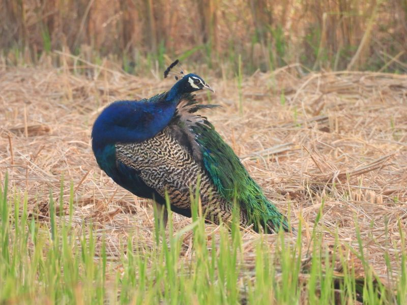
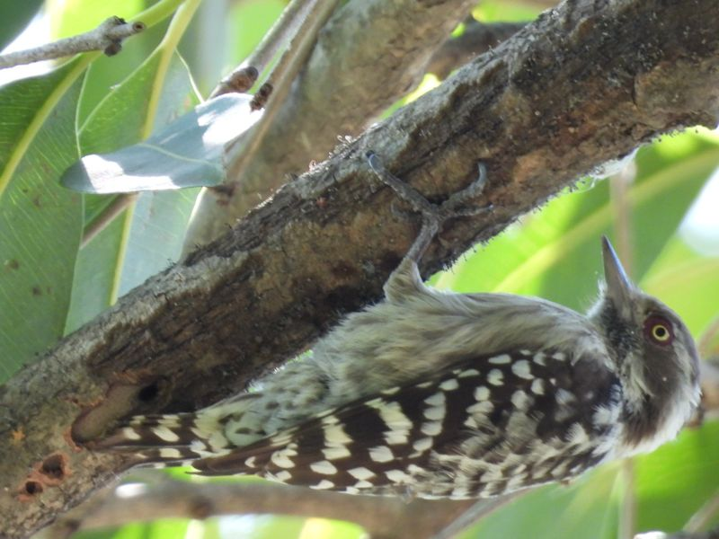
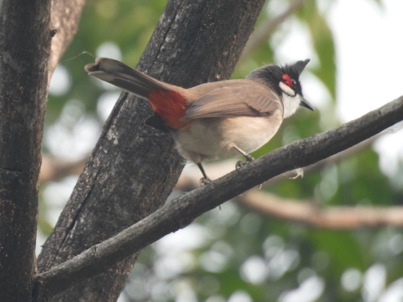
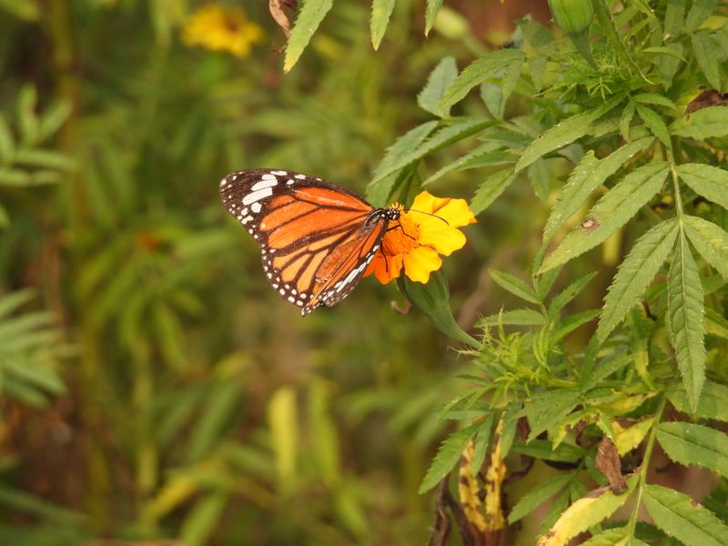
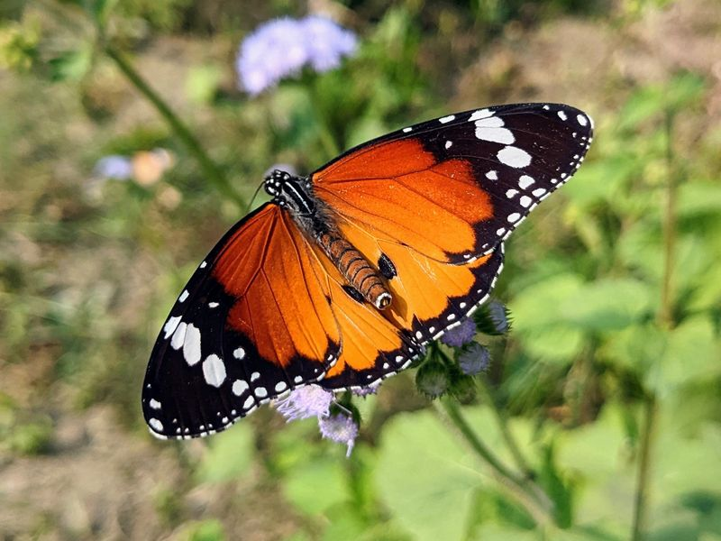
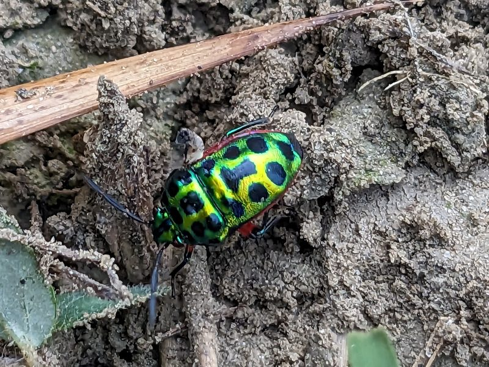
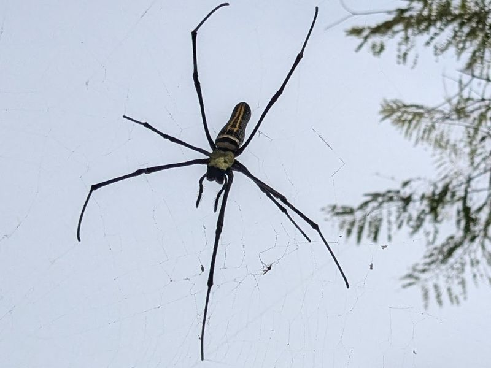
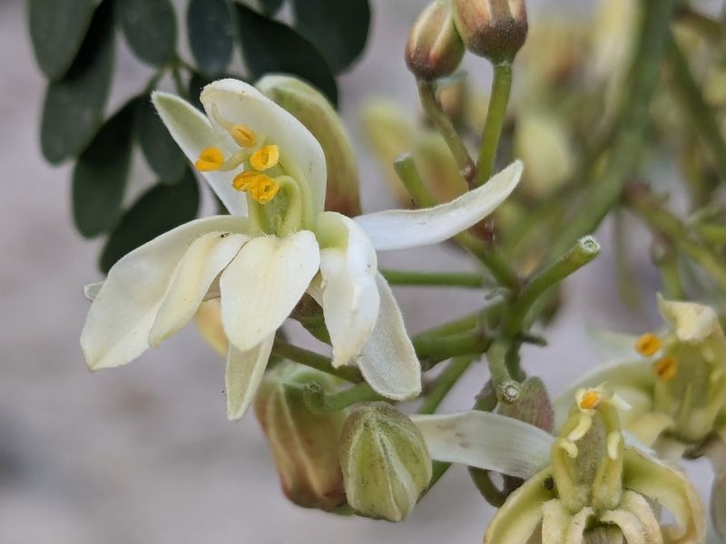
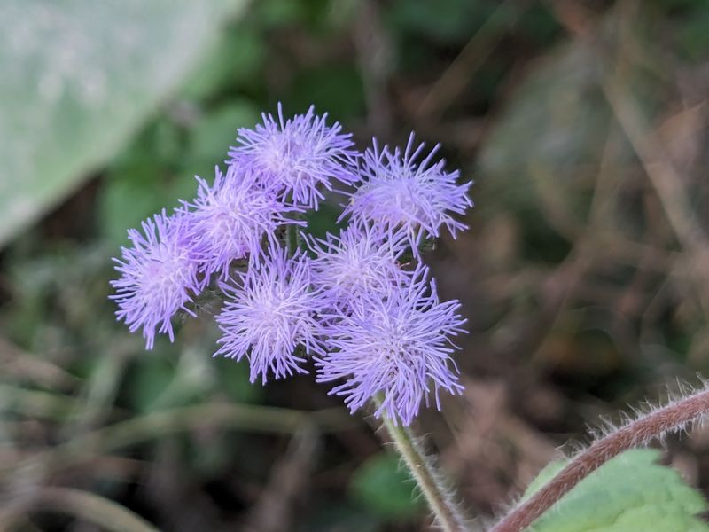

Field & Art
Hand-painted science, a citizen-science atlas of the Basti–Ayodhya countryside, and readings in classical Indian philosophy.
Paintings
Watercolour and ink, mostly of the molecules and membranes I work on. Click to enlarge.


Awadh Biodiversity Atlas
The Awadh Biodiversity Atlas is an open-access citizen-science knowledge base for the living heritage of rural eastern Uttar Pradesh, beginning in the village landscapes of Basti district and spreading across the Basti–Ayodhya agrarian belt. Conservation attention usually settles on large animals in distant sanctuaries, while the ecological foundation of this agrarian heartland lies at our feet: roadside herbs, pollinators in the mustard fields, insects along the canal banks, the seasonal village ponds. The atlas is for the overlooked, the ignored and the misunderstood.
It rests on one principle, and the principle is the reason the work is bilingual: a weed is not merely a weed, a pest is not merely a pest, and every organism has an ecological role. Each entry pairs the Awadhi and Hindi folk name with the Linnaean one, and gives identification, ecological role, references, and the local knowledge that usually goes unwritten.
अवध जैव विविधता एटलस ग्रामीण पूर्वी उत्तर प्रदेश की जीवित विरासत का खुला नागरिक-विज्ञान कोश है, जो बस्ती ज़िले के गाँवों से शुरू होकर बस्ती–अयोध्या की खेतिहर पट्टी तक फैल रहा है। इसका आधार एक ही बात है: खरपतवार केवल खरपतवार नहीं, कीट केवल कीट नहीं, हर जीव की एक पारिस्थितिक भूमिका है।
332 species profiled so far, each with its Hindi and English names, identification, ecological role and references. The list grows every season.
अब तक 332 प्रजातियाँ दर्ज हैं, हर एक के हिंदी और अंग्रेज़ी नाम, पहचान, पारिस्थितिक भूमिका और संदर्भ के साथ। हर मौसम में सूची बढ़ती है।
Each of them has its own page, in Hindi and English, with identification, ecological role, references and a freely licensed photograph where one exists. Open the Awadh Biodiversity Atlas →
हर प्रजाति का अपना पृष्ठ है, हिंदी और अंग्रेज़ी दोनों में। एटलस खोलें →
- Birds73
- Insects49
- Trees36
- Weeds, herbs and grasses35
- Fish, snails and crabs26
- Reptiles and amphibians25
- Spiders and soil life25
- Crops18
- Mammals17
- Mushrooms15
- Aquatic and lower plants13
Objectives
- Re-reading “weeds” and “pests”: how spontaneous flora condition soil microbiology, fix nitrogen, and host the predatory insects that keep crop pests in check.
- Bilingual pictographic field guides: visual guides in Hindi and English, made for rural school students, farmers and naturalists.
- Rural school science programmes: participatory outdoor observation workshops, to build curiosity and the habit of looking closely.
- A research-grade digital atlas: observation logs, seasonal calendars and distributions in an open, standard format that ecologists can use.
From the fields of Basti
My own photographs from the villages where the atlas began, taken between 2021 and 2024. Most of what is here is an atlas species, seen on an ordinary walk: a field margin, a roadside, a kitchen garden. Click to enlarge.









A first dozen
Twelve of them, chosen to show what the atlas is for: a weed that poisons its neighbours and a weed that raises butterflies, the bee behind the mustard crop, the termite and the mushroom that grows only on its nest, a snake that is harmless and an antelope that is protected while it raids the wheat. Each tile opens that species' full entry on the atlas. The pictogram stands for the kind of creature or plant until my own photograph of it takes its place.
इनमें से बारह, यह दिखाने के लिए कि यह एटलस किसलिए है: एक खरपतवार जो पड़ोसी पौधों को ज़हर देती है और एक जो तितलियाँ पालती है, सरसों की फ़सल के पीछे की मक्खी, दीमक और वह छत्ता जो सिर्फ़ उसकी बाँबी पर उगता है, एक साँप जो हानिरहित है और एक मृग जो गेहूँ उजाड़ते हुए भी संरक्षित है। हर खाना एटलस में उस प्रजाति की पूरी प्रविष्टि खोलता है। जब तक मेरी अपनी तस्वीर न आए, तब तक उसकी जाति का चित्र-संकेत रहेगा।
Classical Indian Philosophy & Epistemology
My contemplative inquiries focus on the epistemological frameworks of Advaita Vedanta and Buddhist Madhyamaka / Yogācāra traditions, particularly their rigorous analytical debates on the nature of the observer, perception, and subjective cognition.
In modern biophysics, quantum optics, and statistical inference, the boundary between the observer and the observed system is fundamentally operationalized through measurements and probability amplitudes. Exploring classical Indian philosophical debates on Pramāṇa (valid means of knowledge), non-duality, and the nature of consciousness provides profound intellectual grounding alongside empirical laboratory investigations.